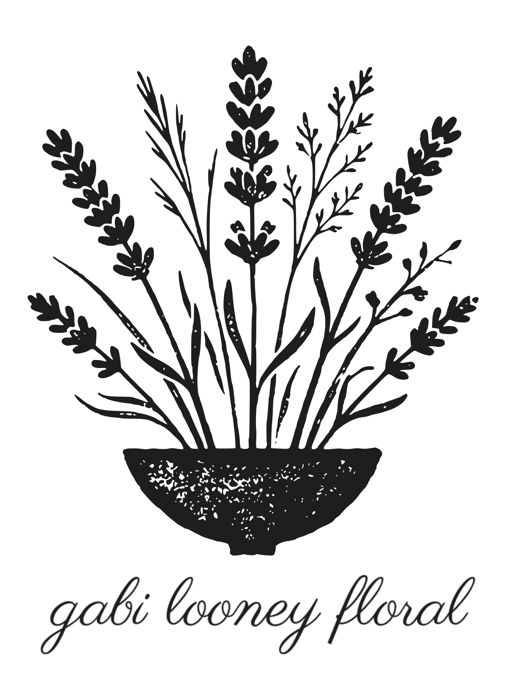

We believe flowers should feel alive, not just arranged. Whether we are softening a marble lobby in the District or framing a wedding aisle, our work is rooted in movement, texture, and the quiet beauty of the natural world. It’s intentional, sculptural design meant to be felt, not just seen.
Florals designed around the feeling of your day. Loose, sculptural, and deeply personal—from the bouquet to the final tablescape.
Inquire for WeddingsBringing warmth to structured spaces. Striking gala installations and botanical retainers that elevate the daily environment.
Inquire for EventsCurrently accepting inquiries in Washington, D.C.